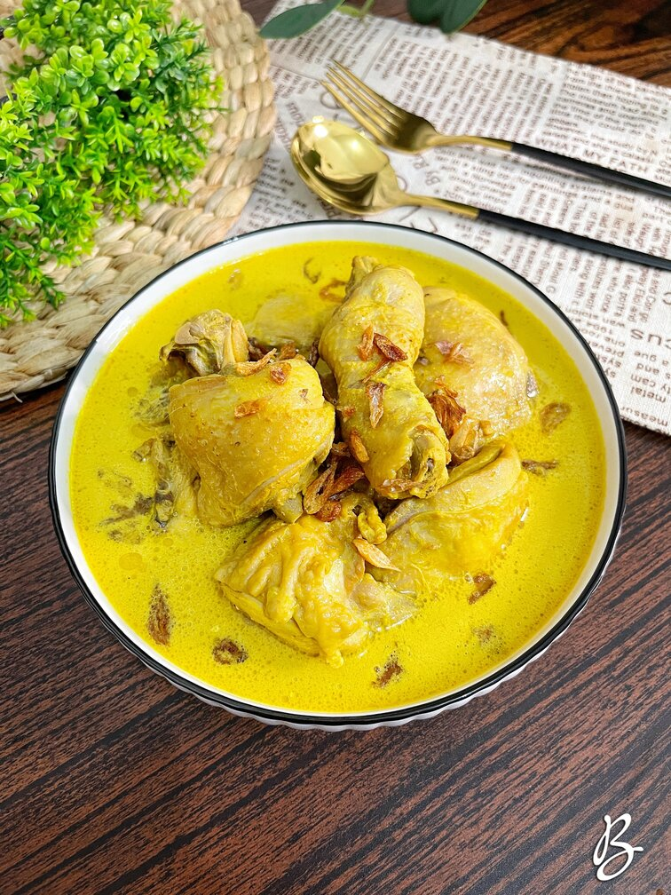
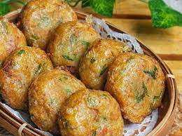

| Rendang | Ayam Opor | Perkedel |
|---|---|---|
 |
 |  |
| Rendang merupakan olahan makanan dari daging sapi yang diolah dengan santan, lada, dan sejumlah bumbu khas lainnya. | Opor ayam sebenarnya adalah ayam rebus yang diberi bumbu kental dari santan yang ditambah berbagai bumbu seperti serai, kencur, dan sebagainya. | Perkedel adalah makanan yang terbuat dari kentang yang digoreng atau direbus sebelum dilumatkan lalu dicampur dengan daging cincang dan bahan lainnya |